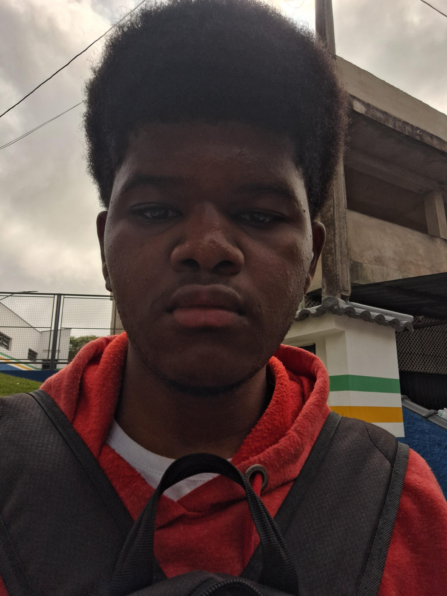

Informações Pessoais
Nome: Andrei Santos da Rocha
Idade: 18 anos
Interesses: Tecnologia, Rap, Esportes, Viagens, Grafite, Games, Astronomia, Política, História, etc.
Hobbies: No meu tempo livre gosto de praticar esportes como vôlei, basquete e futebol, além de passar um tempo com família e amigos.
Reflexão sobre o Ensino Médio
O ensino médio foi um período de grande aprendizado e crescimento para mim. Através das aulas, pude explorar diversas áreas do conhecimento e descobrir o que realmente me apaixona. Além disso, foi no ensino médio que aprendi a importância da dedicação e da disciplina para alcançar meus objetivos. Durante esse período, também desenvolvi habilidades sociais e de trabalho em grupo, que foram essenciais para meu desenvolvimento pessoal e profissional.
Tarefas Favoritas
Aqui estão algumas das tarefas que mais gostei de realizar ao longo do meu período escolar. Essas atividades não só me ensinaram novos conteúdos, mas também me permitiram desenvolver habilidades práticas e criativas.
Atividade de Final de Bimestre 2 ano de IoT
Nessa tarefa tivemos que criar uma rede Wan com comunicação entre todos aparelhos da rede. Mesmo sob grande pressão, eu gostei muito de fazer esse trabalho, pois pude colocar em prática e ver de forma visual o que havia aprendido sobre redes até aquele momento.
Tarefa do Carrinho
Nessa tarefa tivemos que realizar a montagem de um carrinho seguidor de linha com uma placa Arduino. Mesmo enfrentando algumas dificuldades na regulação dos sensores, ver o carrinho em funcionamento no final foi um sentimento gratificante.